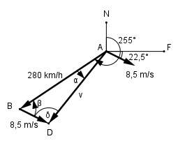

>Aufgabe 220 Ein Flugzeug fliegt mit v = 280 km/h auf dem Kurs rw. 255°. Es weht ein Wind aus WNW mit 8,5 m/s. Welchen Weg s legt das Flugzeug in einer Stunde zurück, und um welchen Winkel α wird es abgetrieben?

rw. 255° = rechtweisend 255° bedeutet, dass der Kurswinkel von Norden aus im Uhrzeigersinn abgetragen wird. Im Dreieck ABD: β = (90° - 75°) + 22,5° = 37,5° 8,5 m/s = 8,5 * 3,6 km/h = 30,6 km/h Fall SWS: Cosinussatz: v2 = (280 km/h)2 + (30,6 km/h)2 - - 2 * 280 km/h * 30,6 km/h * cos β = v2 = (280 km/h)2 + (30,6 km/h)2 - - 2 * 280 km/h * 30,6 km/h * 0,7934 v2 = 65 740,7 km2/h2 v = 256,4 km/h d.h. es legt in einer Stunde 256,4 km = s zurück. Fall SSW: Sinussatz: v 30,6 -------- = ---------- |*sin β sin β sin α 30,6 * sin β v = --------------- |*sin α sin α v * sin α = 30,6 * sin β |:v 30,6 * sin β 30,6 km/h * sin 37,5° sin α = -------------- = ----------------------- = v 256,4 km/h 30,6 km/h * 0,6088 = -------------------- = 0,0727 --> α = 4,2° 256,4 km/h